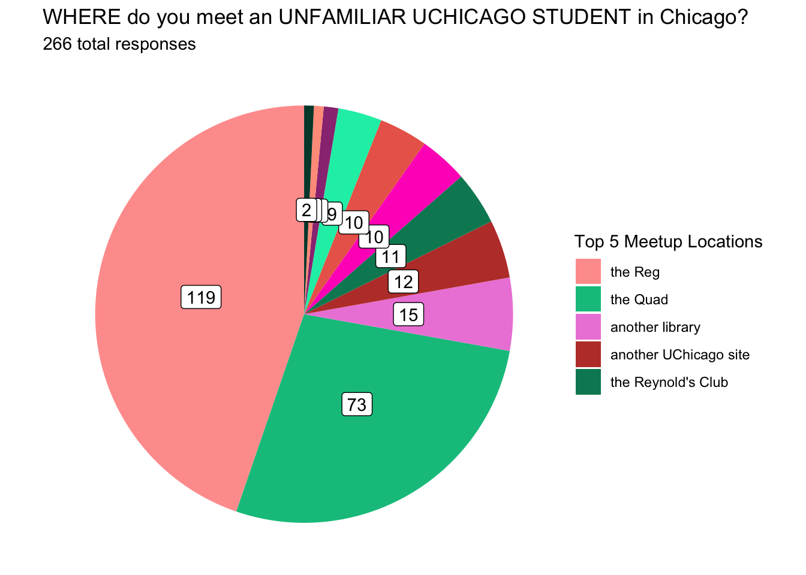

Schelling Games
At the University of Chicago
Introduction
Thomas Schelling introduced the concept of “focal points” in The Strategy of Conflict with the intention of expanding the contemporary perspectives of game theory to include cooperative, not just competitive, games in human decision making (Schelling, 1960). Though his work certainly proved influential in this regard, concepts of focal points and coordination games have found relevance well beyond game theory and economics as a whole. From improvisational music (Canonne, 2018) to urban planning (Rondinelli, 1983), from human-computer interfacing (Wong et al., 2009) to linguistic anthropology (Brown & Levinson, 1987), from social stereotyping (Yoon & Hollingshead, 2010) to online gaming (Ross & Collister, 2014), elements of Schelling’s framework of coordinated decision-making seem ubiquitous.
In this brief report, we consider focal points from a cognitive science perspective. We present data from an informal survey mimicking Schelling’s early (and also quite informal) study in The Strategy of Conflict (Schelling, 1960). We discuss our findings as they relate to nonverbal communication and how these concepts may be extended to further our understanding of coordination in everyday conversation.
Focal points (also called Schelling points) were first conceptualized within the field of economics. Schelling noted that by focusing on zero-sum or fully competitive behavioral scenarios, game theory had failed to account for many real-world games whose outcome rested on successful coordination, not competition, among multiple players (Schelling, 1960). In the context of coordination games, Schelling’s focal points are the salient solutions that players tend to choose due to their intuitively recognizable or, more often, socially shared nature (Schelling, 1960). Critically, players tasked with coordination choose these options even in the absence of explicit communication (Mehta, Starmer, & Sugden, 1994).
Since being introduced in game theory, focal points have seen broader application across the social sciences. In social psychology, focal points offer an explanation for the natural solutions individuals find in social coordination problems where multiple choices are equally valid, as individuals may rely on common expectations or cultural cues to make decisions that lead to successful coordination (Sugden, 1995). Social norms, traditions, and conventions contribute to the emergence of focal points, and they showcase how individuals rely on shared understanding to achieve coordination without explicit negotiation (Bacharach & Bernasconi, 1997). This concept sheds light on the intricate ways in which human behavior and decision-making are influenced by social context and the desire to align with others (Chwe, 2001).
These principles of implicit coordination are clearly applicable to relatively broad real-life contexts, such as meeting someone in a crowded place, deciding on a meeting time without prior communication, or determining where to sit in an auditorium (Schelling, 1960). However, they may additionally apply to narrower contexts we might typically associate with explicit coordination, such as face-to-face conversation. In conversation, we use speech (or sign language) to express meaning “on-the-record,” but conversational interaction consists of much more than formal language (Clark, 1996). “Off-the-record” non-linguistic signals allow interlocutors to send highly informative but implicit messages alongside explicit meaning in speech (Clark, 1996). Nonverbal resources like co-speech gesture and paralinguistic resources like intonation can serve critical pragmatic functions (McNeill, 1992). These tools can make conversation more efficient by allowing addressees to make inferences about speaker intention and meaning based on contextual cues (Clark, 1996).
In the context of everyday interaction, the significance of focal points is tightly linked to common ground (Clark, 1996). In simplest terms, conversational common ground is the shared knowledge, beliefs, assumptions, and experiences that participants in a face-to-face conversation believe to be mutually understood (Clark, 1996). At one level, common ground refers to common knowledge (Stalnaker, 1978). If all interlocutors know that they have all been invited to Anna’s birthday party next Saturday, they may discuss the presents they plan to bring without explicitly mentioning who Anna is, why they would be giving her presents, or the deadline for buying a present for the party (Clark & Marshall, 1981). These assumptions are localized to this group in this conversation on this topic, but there are also generalized social assumptions at play (Clark, 1996). The party-goers know that presents are given for birthdays, that both the invitees and the host will be at the party, that the presents will be given to the host at the party, that presents should be appropriate for what the host would want to receive, etc. (Clark & Marshall, 1981).
Conversational common ground also encompasses emergent properties of the interaction, guided by cultural expectations and linguistic systems (Clark, 1996). The party-goers may refer to Anna as the “birthday girl” or simply “her” rather than naming her at each reference (Clark, 1996). One interlocutor may ask a question and expect to get an answer that is prompt, relevant, and truthful, given that all interlocutors are assumed to follow principles of English pragmatics and conversational organization (Grice, 1975). Common ground, both that which is present at the initiation of the conversation and that which emerges as a product of conversation, allows interlocutors to disambiguate and infer meaning with focal points (Clark, 1996). When a party-goer says, “I really hope she likes it,” the listeners face multiple valid options when determining the referents of “she” and “it” (Clark, 1996). The conversation’s general focus on Anna’s birthday likely enables a convergence of understanding on “Anna” as the “she”; Anna is highly salient in the immediate context (Clark, 1996). Listeners will need to rely on subtler mutual salience to determine whether “it” refers to the party, some particular present, or something else entirely (Clark, 1996).
In the present study, we do not directly probe how interlocutors use focal points in conversation. Instead, we informally replicate Schelling’s first survey (Schelling, 1960). We consider both the results of our survey and of Schelling’s survey to theorize how these generalized points of mutual salience may add to our understanding of the implicit coordination facilitating everyday conversation.
Methods
We constructed a survey modeled after Schelling’s original report. Schelling himself did not perform a true “study” in reporting his results, but rather loosely surveyed the graduate? students in his class at Yale? in the year. Our data collection was similarly gathered quite loosely. The survey data were collected with the intention of serving a pedagogical purpose and with no intention to be published as rigorous study. While we cannot use these data to make empirical claims, they are nonetheless a useful and thought-provoking educational tool (as Schelling’s data certainly were).
Participants
Materials
Schelling’s classroom survey asked students questions challenging them to ambiguously “win” a game by coordinating with a stranger. Famously, he asked where and when the participants would meet a stranger in New York City without any prior communication. Additionally, the survey included a series of questions encouraging convergence on a response in more “game-like” circumstances: guessing a number, flipping a coin, etc.
The survey in this report was in essence an abbreviated version of Schelling’s. It included a selection of the “game-like” questions taken directly from Schelling’s survey. We asked the classic where-and-when questions with some revisions. Because our survey was conducted at the University of Chicago, our version of the where-and-when question asked about meeting a stranger in Chicago rather than New York City. We additionally included two follow-up questions that were not included in Schelling’s data, changing the interpersonal context between the participant and hypothetical partner.
Data analysis
We used R [Version 4.3.3\; @R-base] and the R-packages data.table [Version 1.16.2\; @R-data.table], dplyr [Version 1.1.4\; @R-dplyr], forcats [Version 1.0.0\; @R-forcats], ggplot2 [Version 3.5.1\; @R-ggplot2], ggsci [Version 3.2.0\; @R-ggsci], googlesheets4 [Version 1.1.1\; @R-googlesheets4], kableExtra [Version 1.4.0.1\; @R-kableExtra], lubridate [Version 1.9.3\; @R-lubridate], papaja [Version 0.1.3\; @R-papaja], purrr [Version 1.0.2\; @R-purrr], readr [Version 2.1.5\; @R-readr], scales [Version 1.3.0\; @R-scales], stringr [Version 1.5.1\; @R-stringr], tibble [Version 3.2.1\; @R-tibble], tidyr [Version 1.3.1\; @R-tidyr], tidyverse [Version 2.0.0\; @R-tidyverse] and tinylabels [Version 0.2.4\; @R-tinylabels] for all our analyses.
Responses have been cleaned to account for predictable variations in how individuals input popular responses – e.g., “the reg”, “Regenstein”, and “In the Reg.” are all reported as “The Reg.” Ambiguous responses (e.g., “the library”) are left ambiguous.
Exclusions
A total of NUMBER GOES HERE responses to the “meetup location” questions were excluded (out of NUMBER GOES HERE total) or re-coded as “Other”.
Responses that indicate clear misunderstanding of the question are excluded. These primarily consisted of responses in the “meeting a stranger” or “meeting a student” questions. Since these questions specify that the other party is unknown to the respondent, responses should not assume prior familiarity or experience with the other party, for example “their house”, “the last place we last met”, “where we usually see each other”, or “where you expect them to be at a certain time.”
Responses to the meetup location questions were coded as “Other” if they included multiple locations without rankings (e.g., “pret or hutch”), were overly vague (e.g., “a major center within the city that everyone knows about”), or fanciful/impossible (e.g., “THE MOON!”).
Results
The survey results for each item are reported and visualized below. Some item-level visualizations use pie charts, which we recognize are anathema to many data visualization experts.1 Item-level summary statistics are also provided, and pie-chart-allergic readers may skip to the comparative bar charts.
Meeting locations
Meeting a stranger
You are meeting a stranger in Chicago. You both know that you need to meet each other today, but you haven’t agreed on a place or a time and you have no means of communication. Remember, you cannot communicate with them now or previously in any way!
WHERE do you go to meet them?
Response breakdown:
| Response | N | Percent |
|---|---|---|
| the Bean | 80 | 35.09 |
| Millennium/Grant Park | 31 | 13.60 |
| Other | 22 | 9.65 |
| the Reg | 20 | 8.77 |
| another Chicago landmark | 18 | 7.89 |
| another cafe/dining | 17 | 7.46 |
| the Quad | 13 | 5.70 |
| a UChi Dorm | 7 | 3.07 |
| the Sears/Willis Tower | 6 | 2.63 |
| another library | 3 | 1.32 |
| another residence | 3 | 1.32 |
| another UChicago site | 3 | 1.32 |
| Ex Libris | 2 | 0.88 |
| a recent meeting location | 1 | 0.44 |
| Pret a Manger | 1 | 0.44 |
| the Reynold's Club | 1 | 0.44 |
The most common response for where to meet a stranger in Chicago was the Bean, with 80 responses (35.09%).
Common responses of Chicago landmarks included the Bean/Cloudgate (\(N\) = 0), Millennium/Grant Park (\(N\) = 31), and the Sears/Willis Tower (\(N\) = 0).
Meeting an unfamiliar student
You are meeting another UChicago student who you have not met before. You both know that you are both UChicago students and that you should meet today, but you haven’t agreed on a meeting location and you have no means of communication. Where do you go to meet them?

Response breakdown:
| Response | N | Percent |
|---|---|---|
| the Reg | 117 | 44.49 |
| the Quad | 72 | 27.38 |
| another library | 15 | 5.70 |
| another UChicago site | 12 | 4.56 |
| the Reynold's Club | 11 | 4.18 |
| Other | 10 | 3.80 |
| Pret a Manger | 10 | 3.80 |
| another cafe/dining | 9 | 3.42 |
| Ex Libris | 3 | 1.14 |
| a UChi Dorm | 2 | 0.76 |
| the 1155 Building | 2 | 0.76 |
The most common response for where to meet an unknown UChicago student in Chicago was the Reg, with 117 responses (44.49%). By comparison, only 20 respondents (8.77%) chose to meet a stranger at the Reg.
While the Bean was the most common response for where to meet a stranger in Chicago, no respondents chose to meet an unfamiliar UChicago student at the Bean.
Meeting your UChicago friend
You are meeting your closest friend at UChicago. You haven’t agreed on a meeting location and you have no means of communication. Where do you go to meet them?
Response breakdown:
| Response | N | Percent |
|---|---|---|
| a UChi Dorm | 69 | 25.65 |
| another residence | 55 | 20.45 |
| the Reg | 42 | 15.61 |
| another cafe/dining | 34 | 12.64 |
| Other | 28 | 10.41 |
| another UChicago site | 12 | 4.46 |
| another library | 9 | 3.35 |
| Pret a Manger | 8 | 2.97 |
| the 1155 Building | 5 | 1.86 |
| the Quad | 5 | 1.86 |
| a recent meeting location | 2 | 0.74 |
The most common response for where to meet a close UChicago friend in Chicago was a UChi Dorm, with 69 responses (25.65%). By comparison, only 7 respondents (3.07%) chose to meet a stranger at a UChi Dorm and only 2 respondents (0.76%) chose to meet a stranger at a UChi Dorm.
While the Bean was the most common response for where to meet a stranger in Chicago, no respondents chose to meet a close UChicago friend at the Bean.
The Reg was the most common response for where to meet an unfamiliar UChicago student in Chicago, but only 42 respondents (15.61%) chose to meet a close UChicago friend at the Reg.
Meeting time
As a follow-up to the first “where-to-meet” question, we asked participants to choose a time to meet their stranger.
WHAT TIME do you go to meet them?2
Time breakdown…
40.89% (110 out of 269) of people chose to meet at exactly 12:00.
50.56% chose another time “on the hour” (but not 12:00).
7.81% chose a time “on the half hour.”
Just 0% (0 lonely people) chose anything else.
Coins
You and an anonymous partner need to choose heads or tails. If you both choose the SAME answer, you both win. Which do you choose?
…If you both choose a DIFFERENT answer, you both win. Which do you choose?
| Heads | Tails | Sum | |
|---|---|---|---|
| Choose same | 85.19 | 14.81 | 100 |
| Choose different | 57.41 | 42.59 | 100 |
Numbers…
Pick a number 0 to 10. You win if you match your partner.
Select a number from the set. You win if you match your partner.
Pick any number. You win if you match your partner, and the bigger the number, the more you both win.

Consistency
Discussion
References
Appendix
Appendix A: Individual responses
stranger_others <- Filter(function(x) x %ilike% "Other", levels(stranger_meetup$stranger_where_clean))
student_others <- c(Filter(function(x) x %ilike% "Other", levels(student_meetup$student_where_clean)), "Dorms")
friend_others <- c(Filter(function(x) x %ilike% "Other", levels(friend_meetup$friend_where_clean)), "Dorms", "Recent meeting location")All responses grouped into “Other” categories (Other, another Chicago landmark, another cafe/dining, another library, another residence, another UChicago site):
| Other responses |
|---|
| A coffee shop |
| A Starbucks |
| Art Insitute |
| Art institute |
| Art Institute |
| art institute entrance |
| Bartlett Dining Commons |
| Buckingham Fountain |
| Cafe near me |
| Cafeteria |
| center of the Chicago |
| Chicago |
| Chicago subway station |
| Clark and Lake |
| Cloud gate |
| coffee shop |
| community center |
| Downtown Art institute of Chicago |
| Downtown near the loop |
| Downtown near the tallest building in Chicago. |
| DuSable Bridge |
| Harper |
| Hutchinson Commons |
| I don’t go meet them. |
| I would go to Depaul University’s Barnes and Nobles |
| I would go to the nearest coffee spot to my home |
| In a coffee shop or a quiet (brunch) restaurant. |
| Insomnia Cookies |
| It is literally impossible |
| La Serre |
| Library |
| Magnificent Mile |
| Meet them at your apartment. |
| My apartment |
| My home |
| Navy Pier |
| Near the riverwalk |
| no idea |
| Nutella cafe/I wouldn’t go meet them |
| O’hare |
| On campus. |
| Outside |
| Philz Coffee |
| Planetarium |
| Probably a cafe. |
| Restaurant |
| River walk bridge |
| Roosavelt Station |
| Somewhere on Campus |
| Starbucks downtown |
| Starbucks Reserve |
| Station |
| Teamo |
| the airport |
| The library |
| The Mansueto Library |
| The Med |
| Trump Tower |
| UChicago - dollop |
| UChicago campus |
| Union Station |
| University of Chicago |
| Very center of Chicago |
All responses grouped into “Other” or general categories (another library, another UChicago site, Other, another cafe/dining, Dorms):
| Other responses |
|---|
| At the library. |
| Bartlett |
| Bartlett or the Reg |
| Bartlett; I assume they have to stop by at some point. |
| Big arch |
| bookstore |
| Bookstore |
| cafeteria |
| Charles M. Harper Center |
| glass library |
| Harper Library |
| Hutchinson |
| I just don’t meet them then |
| I would go to a dining hall most likely |
| In the library, or student lounges. |
| Insomnia Cookies |
| library |
| Library |
| Mansueto/reg entrance |
| no idea |
| NULL |
| Outside the Bookstore |
| Plein Air |
| Social Science building |
| starbucks |
| the book store |
| the dining hall |
| The library |
| The library’s |
| The square |
| The University Bookstore |
| UChicago - dollop |
| Uchicago Bookstore |
| UChicago Bookstore |
| Uchicago Library |
| Underneath the uchicago arch |
| University of Chicago |
All responses grouped into “Other” or general categories (another residence, another cafe/dining, Other, another UChicago site, another library, Dorms, Recent meeting location):
| Other responses |
|---|
| a coffee shop we regularly visit together |
| After class |
| any coffee shop on campus |
| at apartment |
| At the CI and I (thats where we always end up) |
| At the dining hall. |
| At their apartment |
| Baker |
| Baker dining hall |
| Bartlett |
| Bartlett or max p |
| Beecher |
| cafe |
| Cathey |
| Cathey lounge |
| common spot |
| Crerar |
| Dining hall |
| Dollop |
| Dollop coffee |
| Eckardt |
| Either the crown weight room or bartlett/baker dining halls |
| Fraternity house |
| Front door |
| Gates |
| Go to their house |
| Grounds of Being |
| Hallowed Grounds |
| Harper cafe |
| harper cubicles |
| Harper Library |
| her apartment |
| Her apartment |
| Her apt |
| her house |
| Her house |
| Hillel House |
| home |
| Home |
| House lounge |
| Hutch |
| I go to their house |
| I will meet her at Bartlett |
| I would meet them at our fraternity house |
| I would meet them at their apartment |
| I’d meet them at their apartment |
| iHouse |
| In the I-house lounge |
| In their apartment or in my apartment. Or any where we want, like coffee shop or restaurant. |
| Insomnia Cookies |
| Kelly Beecher Green |
| KGB |
| Kgb first floor |
| Koi Pond (Botany Pond) |
| Lab |
| library |
| Library |
| Logan |
| Logan Square monument |
| mansueto |
| Mansueto |
| Mine |
| my apartment |
| My apartment |
| My apartment… hopefully he comes back. |
| My fraternity house |
| my house |
| My office |
| our apartment |
| Our apartment |
| Our Apartment |
| Our apt |
| our house lounge |
| Our house lounge |
| Our lab |
| Our normal meeting place |
| our shared apartment |
| Outside the Bookstore |
| Plain Air Cafe |
| Plein air cafe |
| Plein Air Café |
| Prêt à manger |
| Psi Upsilon |
| Psych dept |
| Ratner Athletics Center |
| ratner or baker |
| Rockefeller memorial chapel |
| Rockerfeller lounge |
| social work |
| Starbucks |
| Teamo |
| The house lounge |
| The library |
| The lobby of Woodlawn |
| The Logan Center |
| The Lounge |
| The place we always study together |
| The pub |
| The University Bookstore |
| Their apartment |
| Their Apartment |
| Their apartment or a common hangout place |
| their home |
| Their home |
| Their house |
| their or my apartment |
| UChicago Bookstore |
| where he proposed to me, overlooking Robie House |
| Woodlawn |
| Woodlawn dining hall |
| Woodlawn lounge |
Footnotes
Come at me and/or get in the comments. Pie charts get too much hate. It’s trendy, the same way everyone loves to hate the word moist. Look, I don’t disagree that pie charts are widely misused. In most cases data represented with a pie chart would be better visualized with a bar chart (or no chart at all). However, the very qualities that make pie charts terrible visualizations in most situations can be a strength in others. In this case, the fact that they are really bad communicating any kind of precise information about more than two or three categories actually makes them a quick and easy way to visually communicate the dramatic differences in response distribution for each question. They are not meant to be precise or detailed, but to give the reader a quick sense of proportional data at the item-level without being distracted or overwhelmed by group-level comparisons. Seeing all the tiny little pie slices makes you say “Ugh, there are way too many of those!” Well, yes! That’s the point! Note that when I actually do want to communicate a comparison I use bar charts. There’s no reason to completely trash a tool just because it’s often misused.↩︎
Here “them” refers to a stranger, as the time question was only asked once.↩︎